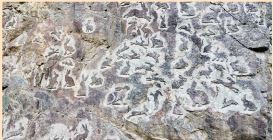

Долина зайцев
Сегодня в Карелии возникает всё больше современных интересных арт-объектов, которые создаются талантливыми и полными энтузиазма людьми. Одна из таких новых достопримечательностей – Долина зайцев. Скала, на которой вырезаны сотни зайцев, теперь стала обязательным пунктом туристических маршрутов.
Долина зайцев – это скала с вырезанными на ней фигурками зверьков. Она находится в 20 км к северу от Петрозаводска на трассе Р-21 «Кола». Создание арт-объекта было задумано около шести лет назад резчиком по камню Сергеем Гапановичем, который живет и работает в Петрозаводске. В 2018 году, когда все формальности с согласованием проекта были улажены, Сергей приступил к нанесению первых рисунков на скалу. Цель проекта − украсить природный ландшафт вдоль федеральной трассы «Кола» необычными наскальными рисунками. В итоге Сергей хочет нанести на скалу 1000 зайцев. Зайцы в Долине разные, у каждого свой характер и имя. Здесь живут Гном, Снуп, Вихо, Жемчужина, Счастливая Лапка, Мелюзга и другие. Есть даже целое семейство Лапиковых: Анатолий, Маруся, Федя и Надежда Патрикеевна.
Подобного объекта такого масштаба в России еще не было. По задумке автора это должно было привлечь внимание к Карелии, увеличить поток гостей республики. Это и произошло вскоре после создания «Долины зайцев». Об удивительном карельском арт-объекте заговорили в СМИ, сюда стали заезжать любознательные путешественники и целые группы туристов. Автор надеется, что в скором времени близ новой достопримечательности появится парковка, оборудованные места отдыха, где посетители смогут не только осмотреть скалу, сфотографироваться, но и перекусить, полюбоваться окружающей природой. Рисунки высекаются при помощи углошлифовальной и прямошлифовальной машиной, трехкилограммовым молотком. В работе используются несколько типов алмазных дисков, чашки диаметром 100 и 50 мм. На заключительном этапе рисунок прорабатывается алмазными фрезами. Сергей Гапанович проводит мастер-классы, где учит всех желающих резке по камню. Поначалу проект существовал только на деньги автора. Он сам покупал материалы, инструмент, делал эскизы, вырезал рисунки. Изредка ему помогали друзья и волонтеры. Можно заказать собственного зайца. Сначала нужно выбрать рисунок и оплатить его. Заяц получит уникальный номер, а после нанесения на скалу владельцу отправят сертификат и фото зайца. Это чем-то напоминает покупку участка на Луне. Но в отличие от эфемерного куска суши, который ты никогда не увидишь, в «Долине зайцев» можно побывать в любое время, увидеть своими глазами и погладить своего каменного питомца. На сайте есть отдельный раздел со списком счастливых владельцев наскальных зайцев.